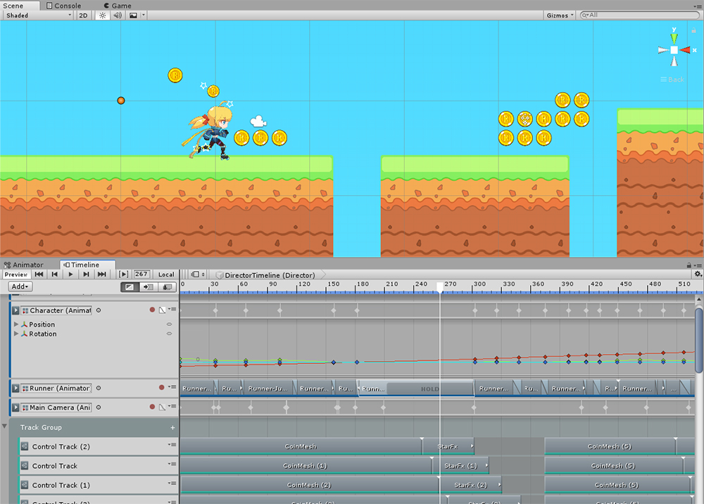
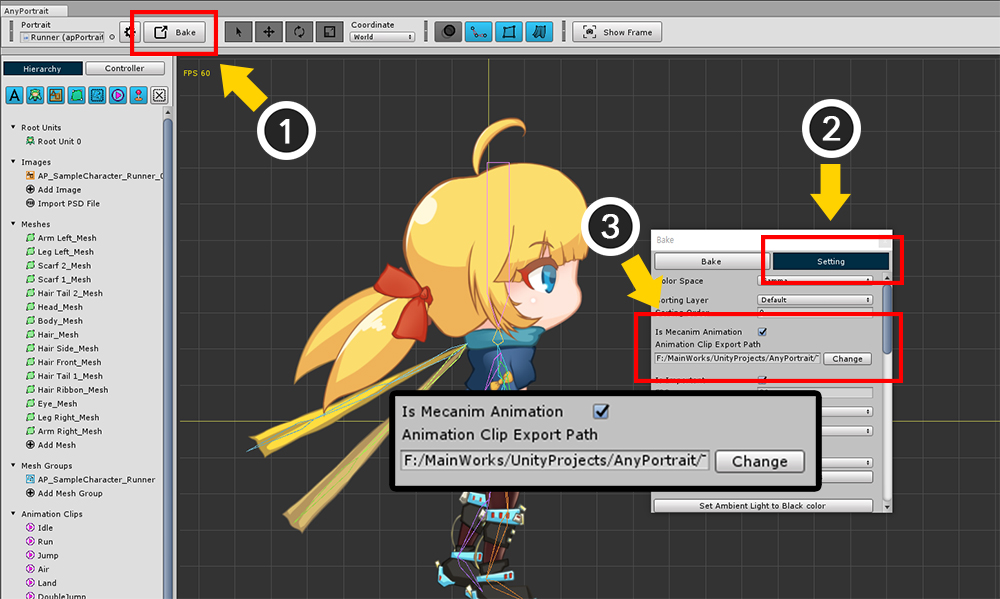
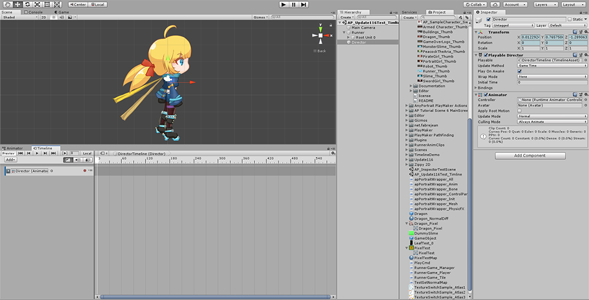
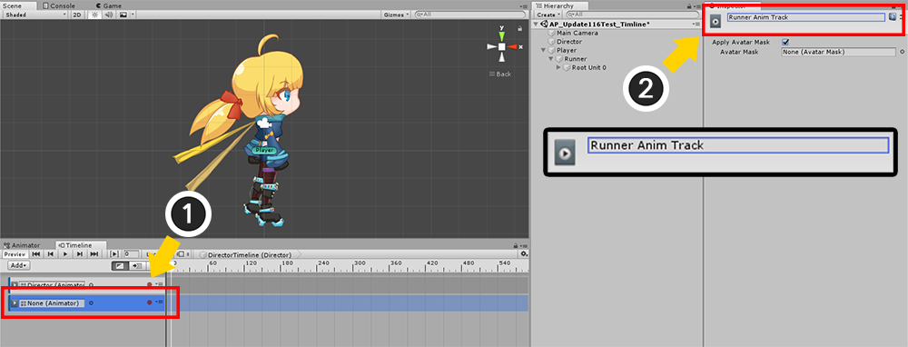
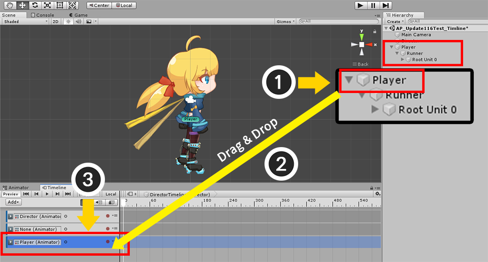
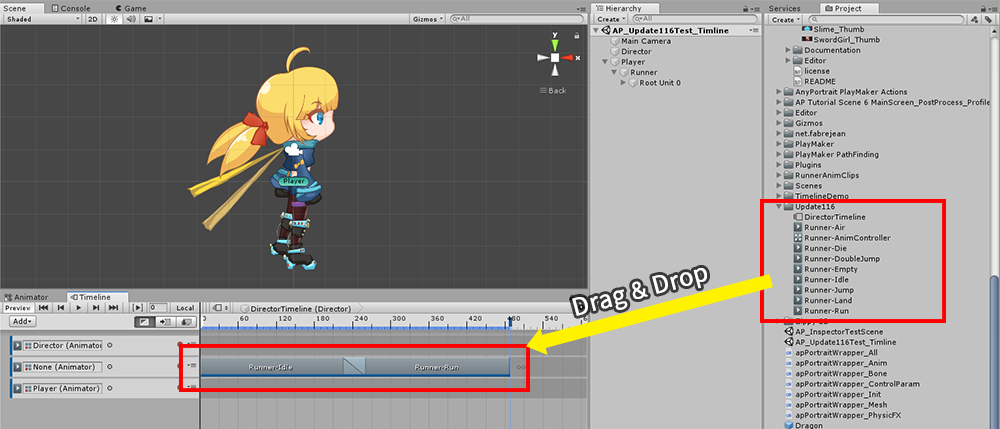
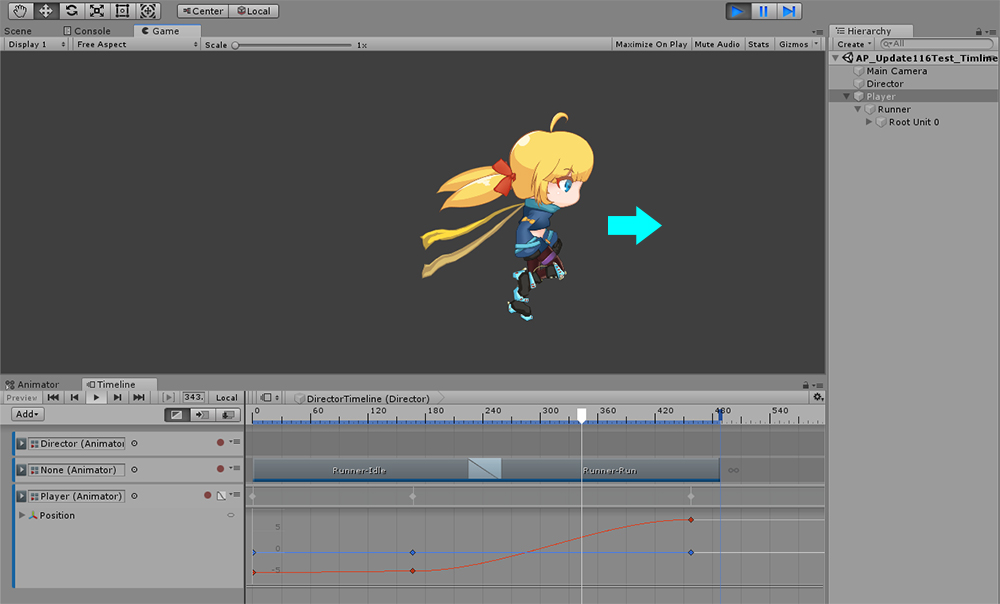

AnyPortrait > Manual > Using Timeline
Using Timeline
1.1.6

Unity's Timeline is a function that creates a cinematic scene that plays during the game.
You can combine and control animations using sequence tools.
You can find a description of the timeline on the Unity homepage. (Related page)
AnyPortrait supports Unity Timeline from v1.1.6.
Create Playable Director and Timeline Asset and link tracks

The Timeline is a feature associated with Mecanim.
Therefore, you have to turn on the Mecanim setting of AnyPortrait.
(1) Press the Bake button.
(2) Select the Setting tab.
(3) Turn on the Mecanim setting and set the path where animation clips will be saved.

(4) Select the Bake tab.
(5) Press the Bake button.

You can see Animator added to the character.
Animation clips are also created.
You can use these animation clips to make Timeline.

Let's create a timeline.
(1) Create a new GameObject. I created it here as "Director".
(2) Add the Playable Director component to the created GameObject.

Open the timeline editor with the menu Window > Sequencing > Timeline.
(The menu may differ depending on the Unity version.)

Timeline editor opened.
(1) Select the Director to which the Playable Director component has been added.
(2) In the timeline editor, click the Create button to create a Timeline Asset.

Timeline Asset has been created and is now ready to edit the timeline.

Make the character created by AnyPortrait (Runner) become a child object of another GameObject (Player).
It is recommended that you create a other GameObject, because local coordinates are forced to (0, 0, 0) if it uses Mecanim.
It is recommended that you create a parent GameObject at the this case as the Timeline, and control the Transform of the parent GameObject.

In the timeline editor, press the Add button and add an Animation Track.

Let's connect the added track to AnyPortrait.
(1) Select the track to be linked with AnyPortrait's character.
(2) Set the name of the track. I set it to "Runner Anim Track" here.
AnyPortrait will distinguish tracks to be linked with "track name", so remember the name you set at this time.

Let's make a track that moves the character.
(1) Drag and drop "Player", the parent GameObject of the character you created, (2) to the track list in the timeline.
(3) A track for Player has been added.

(1) Select AnyPortrait character.
(2) In the Inspector, set the size of Track Data in the Timeline Settings item to 1.
(3) Connect Director with Playable Director to Director Item.
(4) In the Track Name field, type the name ("Runner Anim Track") of the previously created track.
About setting tracks in the timeline
You can interact with tracks in the timeline in the Inspector, with the following features:
1) Multiple layers
Linking two or more tracks to the same Playable Director is the same as creating multiple animation layers.
You can set the blending order and method for multiple layers by changing the values of Layer and Blend.
2) Assigning multiple Playable Director
If there are "Playable Directors" in the scene, you can add them all to the Track Data.
Only the Playable Director currently playing controls characters.
If all Playable Director's play is completed, AnyPortrait's character is controlled by the mecanim's Animator instead of the timeline.
3) Adding or Removing Track Data with a Script
You can use scripts to connect with Playable Director while the game is running.
Please use the following functions provided since v1.1.6.
(Please refer to related page for detailed explanation.)
public bool AddTimelineTrack( UnityEngine.Playables.PlayableDirector playableDirector, string trackName, int layer, apAnimPlayUnit.BLEND_METHOD blendMethod)
: Connect to a track in Playable Director.
Track name and layer information must be entered.
If this is not a valid track, this function returns false.
public void RemoveInvalidTimelineTracks()
: Remove all invalid track information.
public void RemoveAllTimelineTracks()
: Remove all track information.
public void UnlinkTimelinePlayableDirector(UnityEngine.Playables.PlayableDirector playableDirector)
: Disconnects from the entered Playable Director.
public void SetTimelineEnable(bool isEnabled)
: Sets whether or not to be controlled by the timeline.
Place animation clip and move the character

Now that the character is linked to the track, let's put animation clips on the timeline.
If you turn on the Mecanim setting and Bake it, animations will be saved as Animation Clip Assets.
Simply drag and drop these animation clips onto the track.

When you play the game, you can see that the timeline is played and the animations of the character are played back in order as well.

If you really want to move the character, you need to make an animation the other track to which the parent GameObject is registered.
(1) Press the track's record button.
(2) Select "Player" as the parent GameObject.
(3) Create keyframes by moving each position according to the frame.

When you run the game again, the animation will run as the character moves forward.
Preview the timeline in the editor
If you have completed this step, you can see that the animation is running along the timeline during the game.
However, if the game is not running, the animation of the character of AnyPortrait will not play even if the timeline is played.
AnyPortrait is not automatically updated in the editor, because the mesh is updated only when there is a input event.
To solve this, another script is provided since v1.1.6 so that it will be played by the timeline even when the game is not running.

Select the character of AnyPortrait with apPortrait and press the Add Component button.
Select AnyPortrait > Timeline Simulator.

The Timeline simulator (apAnimPlayTimelineSimulator) has been added as a component.
(1) Assign the current Playable Director.

While editing the timeline, you can see that your character's animation is working properly.
Properties and precautions of the timeline simulator
- When Simulate is turned on, animations are played together when the timeline is played, and conversely, when you turn off Simulate, the character is not controlled by the timeline.
- When adding or removing an animation clip, the Refresh Tracks button must be pressed to recognize updated track information normally.
- The Timeline simulator only works during timeline editing and does not work when the game is run.
- When the Timeline is complete, it is recommended to delete the Timeline Simulator component.
Animated clip information in track and completed timeline sequence

You can modify the properties of animated clips placed on a timeline track in the Inspector.
AnyPortrait will reflect the "Clip In" and "Speed Multiplier" property values in the animation playback.
- You can change the start point of animation by changing Clip In.
- You can control the playback speed of the animation by changing the Speed Multiplier.